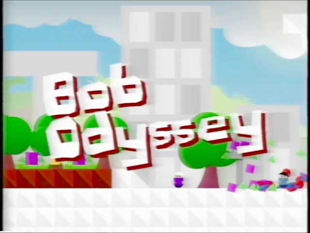

Here is a series of performance tests for Bob Odyssey. You can run them in your browser.
Tests:
Performance Test 13.1
Bob ARG Credits
Extras:
Bob 1st Aniversary
Bob 1st Aniversary Part 2
Check out upcoming features at: https://trello.com/b/IT2exbkB/bob-odyssey-updates
Also play these versions at: https://hophophasan.itch.io/bob-performance-test
CHANGELOG 22/5/22 (Perf 13.1)
CHANGELOG 24/3/22 (Perf 13)
CHANGELOG 28/1/22 (Perf 12)
CHANGELOG 24/1/22 (Perf 11)
CHANGELOG 23/1/22 (Perf 10)
CHANGELOG 21/1/22 (Perf 9)
CHANGELOG 17/1/22 (Perf 8)
CHANGELOG 26/12/21 (Perf 7)
CHANGELOG 30/11/21 (Perf 6)
CHANGELOG 27/11/21 (Perf 5)
CHANGELOG 27/11/21 (Perf 4)
CHANGELOG 26/11/21 (Perf 3)
CHANGELOG 25/11/21 (Perf 2)
CHANGELOG 25/11/21 (Perf 1)